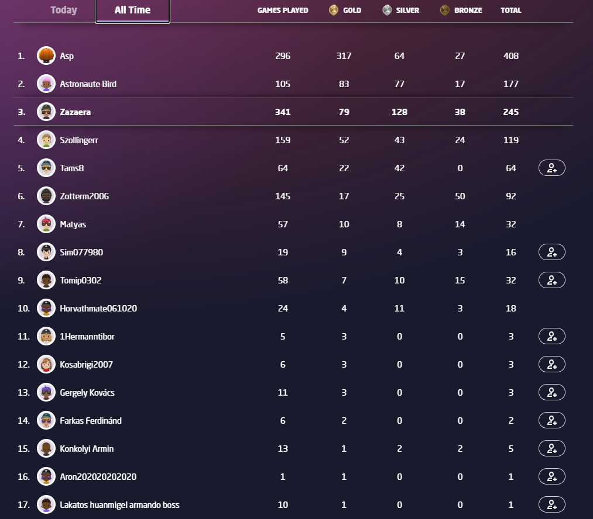

Geoguessr
A játék menete
A Google Maps ledob egy random helyre a világba (ez attól függ hogy
milyen pályán játszol) és neked a térképen be kell jelölnöd, hogy hol
vagy. Ahova ledobb a játék attól a ponttól lehet mozogni (be lehet
állítani, hogy lehessen mozogni vagy ne), de azt a helyet kell
bejelölnöd ahova lerakott a játék.
A tippelés után a játék egy pontot ad a tippre az indulóponthoz
viszonyítva. A legmagasabb pont amit el lehet érni az 5000 pont, de
ahhoz pár méterre pontosan kell el helyezni a jelölőt. Az alap játékmód
5 körből áll, tehát 5-ször lehet tippelni és minnél több pontot kell
összegyűjteni.
Az oldalról
A geoguessr egy oldal ahol online és egyedül is lehet játszani.
Több játékmód is létezik amik kicsit izgalmasabbá teszik a játékot.
Rengeteg pálya létezik. Egy pályát bárki csinálhat ha, előfizet a
prémiumra.
Ranglisták

A játéknak több ranglistája is van, van egy ami a barátokkal hasonlít
össze és van egy ami a competetive játékmódot játszókkal.
Prémium
A prémium havonta 700 Forintba kerül.
Ezzel korlátlanul lehet játszani, míg az ingyenes módban 5 percet lehet
15 percenként játszani.
További előnyök
-
Reklámmentes
-
Competetive játékmód
-
Pálya készítése
-
Party létrehozása
-
Az avatár személyreszabása